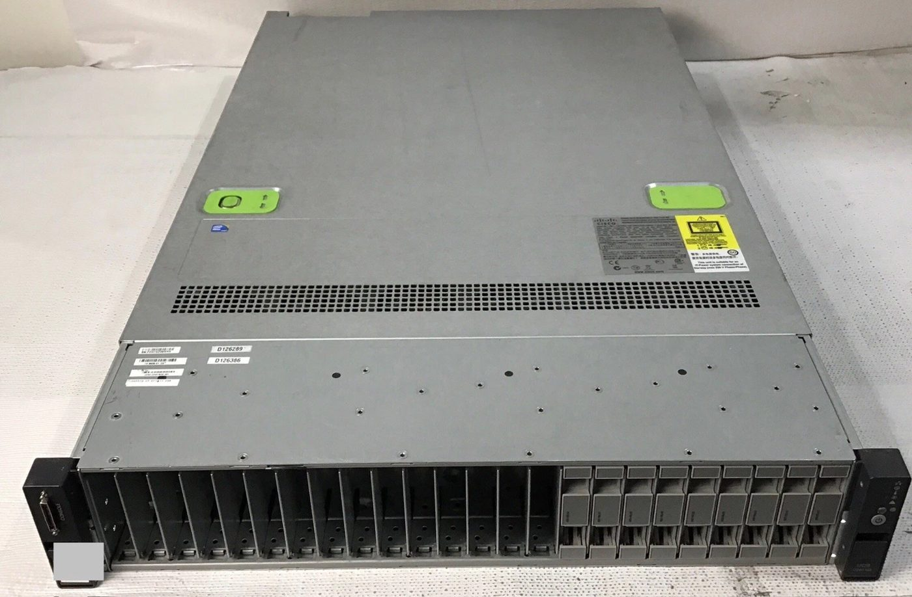
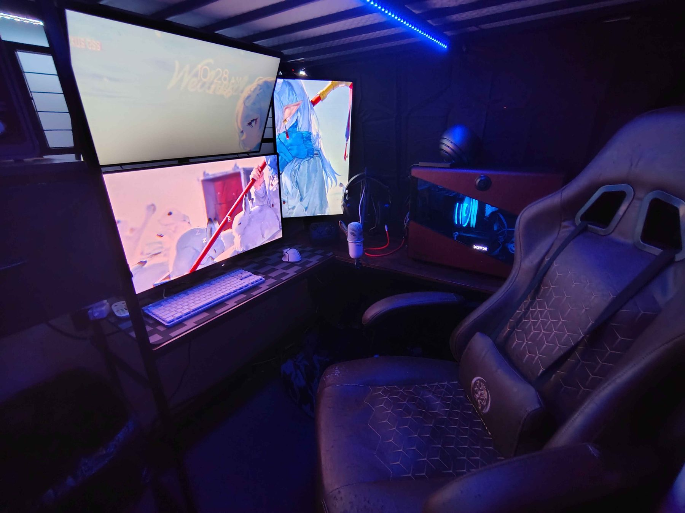
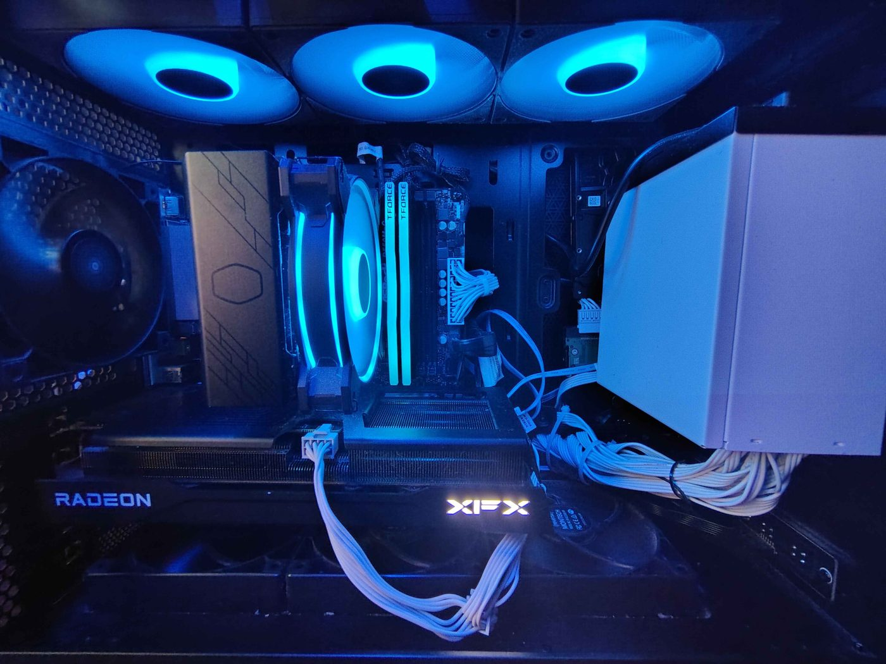
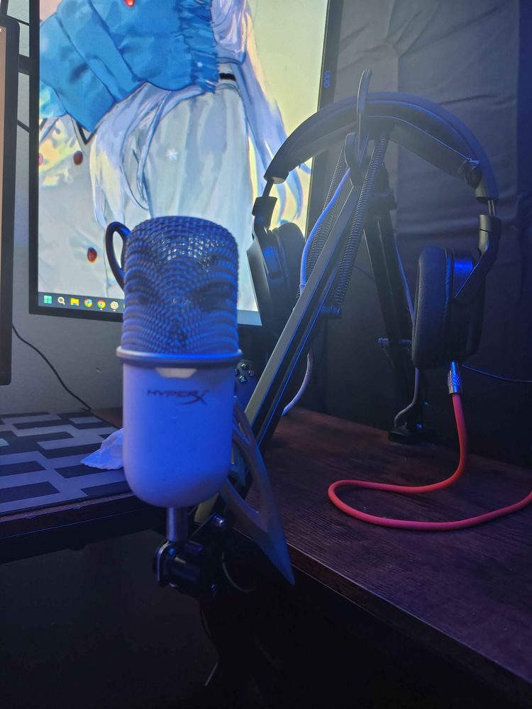

Two servers and a Cisco switch that I use to learn virtualization, storage, Active Directory, networking and self-hosting. Specs, upgrade plans and certifications are below.
The always-on part of the lab.

| Model | Cisco UCS C240 M3 (2U) |
| CPU | 2× Intel Xeon E5-2680 v2 20 cores / 40 threads, up to 3.6 GHz |
| Memory | 32 GB DDR3 ECC |
| Storage | 6 TB |
| GPU | AMD Radeon RX 590 8 GB |
| Hypervisor | Proxmox VE |
| Memory | 128 GB DDR3 ECC 1600 MHz | $70 |
| Cooling | 8× Delta AFC0612D fans | $72 |
| Cooling | Supermicro SNK-P0048AP4 2U active CPU heatsink | $70 |
| Total | $212 |
| Chassis | 2U rackmount case 16.9 × 3.5 × 15.0 in |
| CPU | Intel Core i5-6500 4 cores / 4 threads |
| Memory | 16 GB DDR4 |
| Storage | 500 GB NVMe, 1.5 TB HDD |
| GPU | AMD Radeon RX 580 8 GB |
| Switch | Cisco Catalyst 2960G Managed Gigabit switch |
| Rack | Hand-built from 2×2 lumber and plywood 30 in deep, 19 in mounting rails |
Not part of the lab, listed for completeness.
| CPU | AMD Ryzen 7 5700X 8 cores / 16 threads |
| Memory | 32 GB DDR4 3200 MHz |
| GPU | XFX Radeon RX 9060 XT 16 GB Swift OC |
| Storage | 2 TB Samsung 990 EVO Plus (NVMe) 2 SATA SSDs (incl. 500 GB), 2× 2 TB HDD |
| Power supply | Apevia Prestige 600 W Gold |
| Case | Monarch Heritage Pro |
| OS | Windows 11, Arch Linux (Hyprland) |
| 1 | Corsair RM850x power supply |
| 2 | Another 1–2 TB NVMe drive |
| 3 | AIO cooler and a move to AM5 (eventually) |
| CPU | Intel Core i7-8565U 4 cores / 8 threads |
| Memory | 16 GB DDR4 (upgrading to 32 GB) |
| Storage | 500 GB SSD |
Monitors and peripherals.



| Main | AOC Q27GAZDV 27", QD-OLED, 240 Hz, HDR |
| Top | 1440p, 180 Hz |
| Portrait | 1080p, 120 Hz |
| Keyboard | Epomaker G84 HE |
| Mouse | Logitech Pro X Superlight 2c SE |
| Microphone | HyperX SoloCast |
| Headset | Razer Barracuda X Upgrading to a Sennheiser HD 560S or Beyerdynamic DT 990 Pro |
| Controller | 8BitDo Ultimate 2 |
Six certifications.
| Certification | Area |
|---|---|
| CCNA | Networking |
| Network Pro | Networking |
| PC Pro | Computer hardware and support |
| Linux Pro | Linux administration |
| Security Pro | Cybersecurity |
| Cisco IT Essentials | IT fundamentals |
Strongest areas first.
| 1 | Networking | Strong |
| 2 | IT support & troubleshooting | Strong |
| 3 | Computer hardware | Strong |
| 4 | Linux administration | Good |
| 5 | Systems administration | Good |
| 6 | Virtualization & homelab | Good |
| 7 | Cybersecurity | Foundational–Good |
| 8 | Software engineering | Developing |